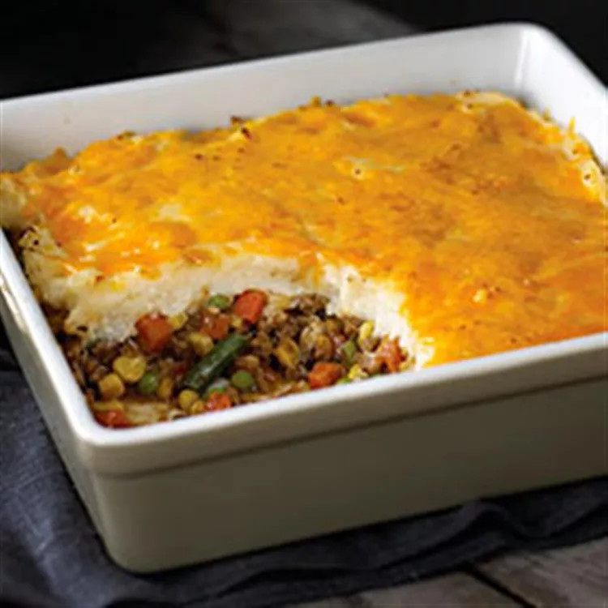

Shepherd's Pie

Description
This Celtic classic is now easier and cheesier than ever! Beef, taters,
veggies, and gravy can certainly shine on their own but once you've given
your pie the Philadelphia treatment you'll be screaming, "ADRIAN!!!" every
time you hear The Chieftains.
Ingredients
- 1 pound ground beef
- 2 cups hot mashed potatoes
- 4 ounces Philadelphia Cream Cheese, cubed
- 1 cup Kraft Shredded Cheddar Cheese, divided
- 2 cloves garlic, minced
- 4 cups frozen mixed vegetables, thawed
- 1 cup beef gravy
Steps
- Preheat the oven to 375 degrees F (190 degrees C).
- Brown meat in a large skillet. While the meat is browning, mix potatoes,
cream cheese, 1/2 cup shredded cheese, and garlic until well blended.
- Drain meat. Return to skillet; stir in vegetables and gravy. Spoon into
a 9-inch square baking dish. Cover with potato mixture and remaining 1/2 cup
shredded cheese.
- Bake in the preheated oven until heated through, about 20 minutes.